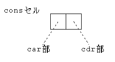
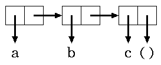
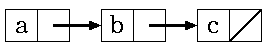

S式とconsセル
Lispでデータ構造(システムでのデータの内部表現)のための記法として，S式 (symbolic expression)がある．Lispの方言の一つであるSchemeのデータ構造も これに従っており，リストの内部表現 (システム内部でのリストの実現方法)とも密接な関係がある．ここでは，S式の 定義とリストの内部表現に用いられるconsセルについて説明する．
S式の定義
- アトムはS式である
- S1,S2がS式であるとき，ドット対(S1 . S2)はS式である．
ドット対(S1 . S2)のS1をcar部，S2をcdr部と呼ぶ． ここで，S1,S2は再びS式，つまりアトムまたはドット対であり，S式は再帰的なデータ構造を表現している． 以下は，全てS式である．
()
1
a
(#t . #f)
((a . (b . ())) . ())
("x" . (square . ((100 . (if . ())) . (#\newline . ()))))
(() . ())
ここで，
(a . (b . ()))というS式を詳しく調べると，
car部 記号a(これもS式) cdr部 (b . ( ))というS式であり，さらにcdr部のS式(b . ( ))は，
car部 記号b(これもS式) cdr部 空リスト(これもS式)という形になっている．
リスト表現は，ドット対で表現されるデー タ構造を読みやすいように省略して表したものである．形式的には，『. (』に 対応する『)』があるとき，それらを省略することができる．以下の2つの式は同 一のデータ構造を表す．
(S1 . (S2 . (S3 … (Sn . ())))) (S1 S2 S3 … Sn)このリスト表現と元のS式との対応は，consセルを用いた表現を使うと分かりやすい．
実際，システムに対してS式をドット対の形式を用いて入力すると，それに対応するリスト表現を返す．
> '(a . (b . (c . ()))) (a b c) > '((a . (b . ())) . (c . (d . ()))) ((a b) c d)cdr部が( )でないときには，“.”は省略できない． たとえば，
(S1 . (S2 . S3))は，リスト表現では，
(S1 S2 . S3)となる． このようなものを，ドットリストといって，通常のリスト(cdr部が空リスト)と区別することもある．
consセル
Schemeのシステム内部では，リストデータはconsセルを使って表現されている． consセルの構造はドット対そのもので表され，car部とcdr部の2つのフィールド から成る．

car部，cdr部に入っているS式は矢印で指し示される．
次の図は，(a . (b . (c . ( ))))というS式，すなわち(a b c)というリストを表している．

これは，次のように描かれることも多い．

つまりS式のリスト表現は，繋がっているconsセルのcar部に入っているデータを順に並べたものに対応することが分かる．
ドット対以外のアトム(記号，真偽値，数値など)もある種のセルに格納される．